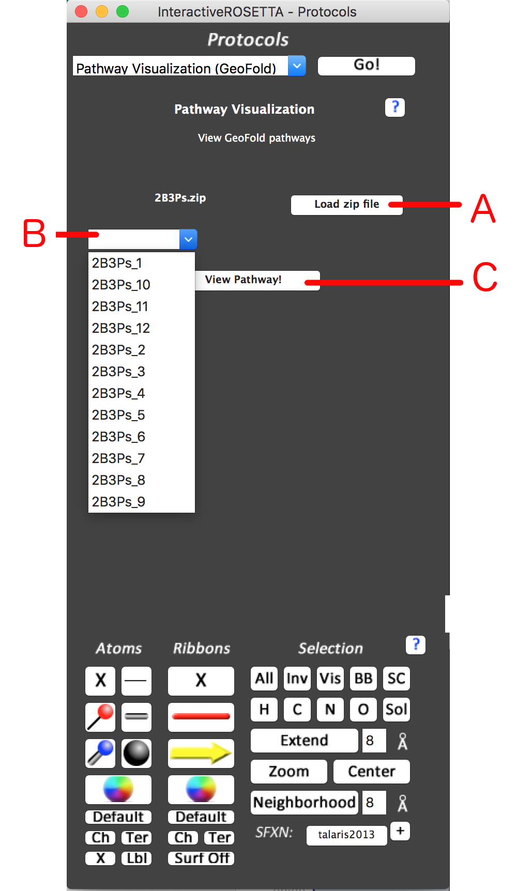
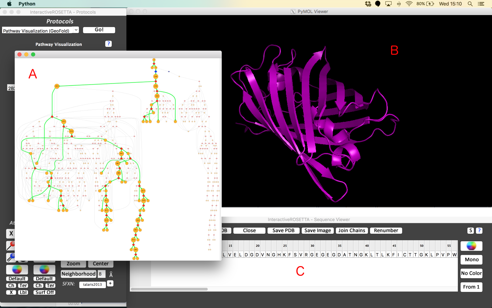
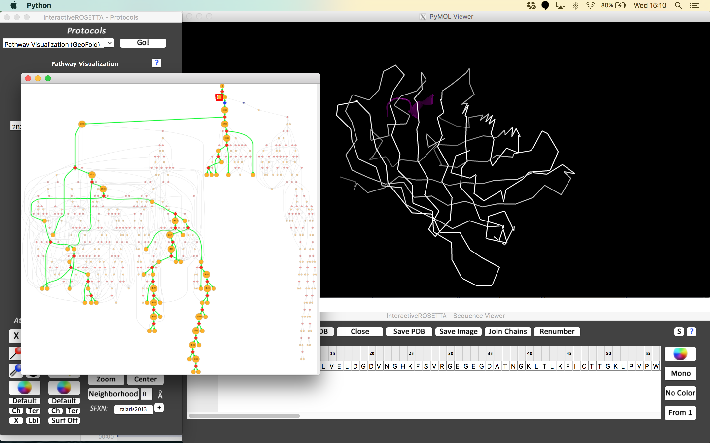
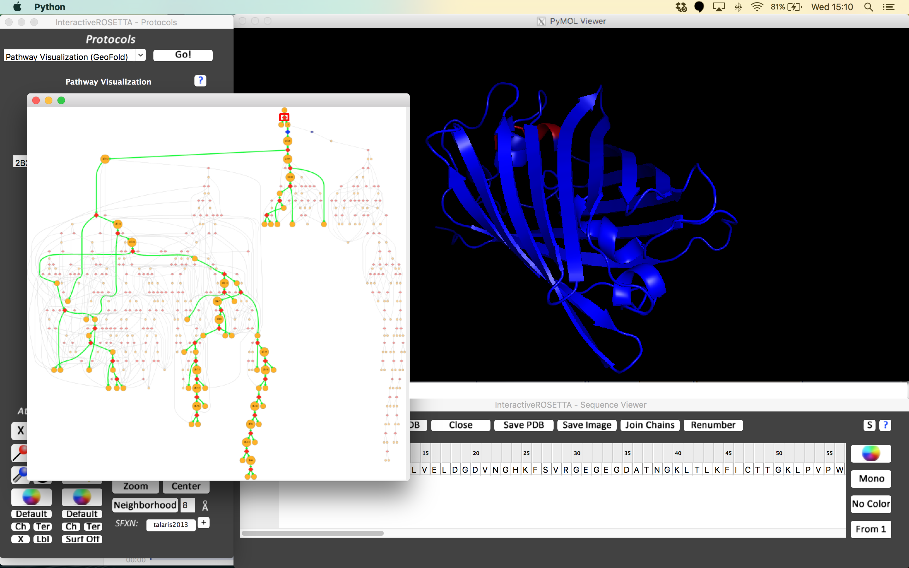
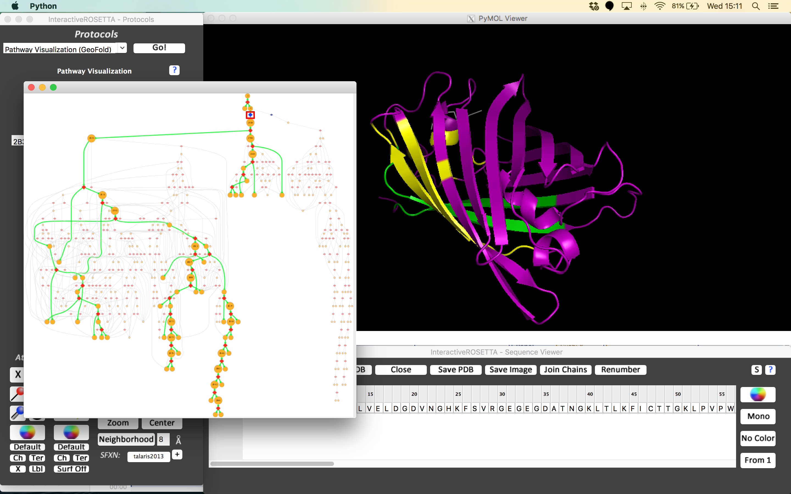

Figure 1: Pathway Visualization Menu
A: Load zip file button - Click here to load a zip file generated from a run of GeoFold. InteractiveROSETTA will extract the PDB file and pathway information from the archive.
B: Pathway Selector - This drop-down menu will store each available pathway generated for user selection.
C: View Pathway Button - Click here to view the selected pathway

Figure 2: InteractiveROSETTA after opening a pathway
A: Pathway Screen - The selected pathway is displayed as a directed acyclic graph (DAG) with the native state at the top and unfolded states at the bottom. Highlighted in green is the maximum traffic pathway
B: PyMOL Window - The PDB is automatically loaded into the PyMOL window in the native configuration colored purple.
C: Sequence Viewer Window - Likewise, the sequence is automatically loaded

Figure 3: Intermediate Visualization - When the boxed intermediate is clicked, the structure present will be colored purple and the rest of the protein will be rendered as a white wireframe.

Figure 4: Transition Visualization - When the boxed transition is clicked, its two unfolded states are colored red and blue. Any regions not in the structure will be rendered as a white wireframe.

Figure 5: Seam Transition Visualization - When a seam transition or intermediate is clicked, contacts are broken between the yellow sections and the green sections.